현비서 E2E 기록 · 20261108-1740
| 케이스 | 내용 | 판정 | 걸린 시간 | 응답(말→답) |
|---|---|---|---|---|
| e00 | 시동 — 인사 · 브리핑 순서 | 통과 3/3 | 50.0초 | 7.3s |
| e01 | 네비 모드 — 말로 목적지 · 현비서 화면 지키기 · 내비 판 · 반반 화면 | 통과 5/5 | 30.4초 | 5.5s |
| e02 | 교통상황 — '앞길 어때?' · 내비 기준 교통 표 | 통과 2/2 | 21.5초 | 5.3s |
| e03 | 휴게소 소개 — 왼쪽 사진 · 오른쪽 표 | 통과 4/4 | 73.4초 | 5.2s, 13.1s |
| e04 | 취향 질문 — 묻고 · 대답을 취향으로 기록 | 통과 2/2 | 28.6초 | 5.7s, 5.5s |
| e05 | 웹툰 순위 — 표지 격자 | 통과 2/2 | 34.0초 | 6.7s |
| e06 | 영화 순위 — 목록 표 | 통과 2/2 | 22.7초 | 6.2s |
| e07 | 스포츠 기사 — 웹 검색 모드 | 통과 2/2 | 50.0초 | 13.1s |
| e08 | 인물 기사 — 사진 · 기사 표 | 통과 2/2 | 55.4초 | 13.1s |
| e09 | 주행 중 — 사고 정찰 · 휴게소 알림 | 통과 4/4 | 99.5초 | — |
| e10 | 글레오 — '현비서 지금 상황' 흉내 | 통과 1/1 | 5.9초 | — |
| e17 | 도착 추천 — 점심 시간 곧 도착 · 국밥 취향 · 내려서 카드 | 통과 4/4 | 106.2초 | 5.4s, 5.2s |
| e18 | 도착 추천 — 곧 도착 제안에 '응' → 그 식당으로 안내 | 통과 3/3 | 84.1초 | 5.3s |
통과 e00 · 시동 — 인사 · 브리핑 순서 영상 0:08
새 데이터로 앱을 켜면 순서를 몰라 '뭐부터 들을까요?'를 묻고, 대답한 순서를 저장해 바로 그 순서로 브리핑한다
판정
- ✓ 시동 인사 이벤트
log: event\|hello - ✓ 브리핑 순서를 묻는다
log: say\|P\d\|.*(뭐부터|순서) - ✓ 대답한 순서(날씨 먼저) 저장
server: "brief_order": \["weather"
실제 대화·동작
| 0:18 | 길 | nav cancel|demo|null |
| 0:21 | 이벤트 | hello |
| 0:27 | 두뇌 | 답 도착 · claude |
| 0:27 | 현비서 P2 | 안녕하세요, 시동 걸렸어요. 오늘 브리핑은 뭐부터 들을까요? 날씨, 뉴스, 주식, 교통 같은 것 중에 순서대로 말해 주세요. |
| 0:38 | 운전자 | 날씨 먼저 듣고 그 다음 뉴스 |
| 0:41 | 현비서 P1 | 어디 보자. |
| 0:45 | 두뇌 | 답 도착 · claude · 카드 「오늘 뉴스 헤드라인」 |
| 0:45 | 카드 | 오늘 뉴스 헤드라인|10|kind=list|img=0|삼성 스포츠단, 야구 KS 우승 계기로 암흑기 탈출 신호탄 / 2021 목발 투혼 어디 갔나…자만한 kt, 신기루처럼 사라진 2026 / 조작기소특검에 380억원 이상 투입…7차례 특검 중 최대치 |
| 0:45 | 현비서 P1 | 다음부터 이 순서로 할게요. 지금 4도에 이슬비가 오고, 밤 9시쯤 비 확률이 94%예요. 뉴스는 삼성이 12년 만에 야구 한국시리즈 우승했대요. 조작기소특검에 380억원 넘게 들어갔다는 소식도 있어요. |
화면
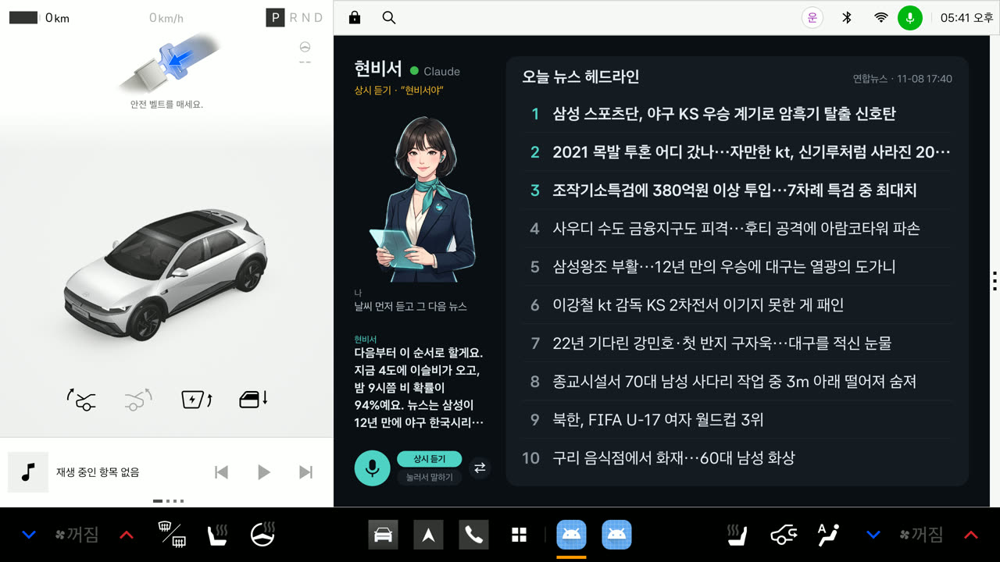
단계
- +0.1s {"do": "split", "on": false} — 1칸
- +4.1s {"do": "restart"}
- +22.6s {"wait": "reply", "timeout": 45} — 답 도착
- +23.3s {"do": "say", "text": "날씨 먼저 듣고 그다음 뉴스", "voice": false, "slide": "현비서가 인사하고 '뭐부터 들을까요?' 물으면"} — 음성 3.7초 「현비서야 날씨 먼저 듣고 그다음 뉴스」
- +46.6s {"wait": "reply", "timeout": 60} — 답 도착
- +48.5s {"shot": "시동 브리핑"} — 시동 브리핑
통과 e01 · 네비 모드 — 말로 목적지 · 현비서 화면 지키기 · 내비 판 · 반반 화면 영상 1:04
'현비서야 강남역 가자'(실제 음성 → 받아 적기 → 호출어 → 두뇌)로 내비 경로를 잡는다. 내비 앱이 스스로 앞으로 나와도 현비서가 다시 앞으로 오고(11-08), 1칸 화면 오른쪽 정보창에 내비 판(다음 회전 · 그다음 · 이어지는 안내 · 남은 거리)을 보인 뒤, 앱 영역 2칸으로 왼쪽 현비서 · 오른쪽 내비를 나란히 띄운다
판정
- ✓ 귀가 호출어와 목적지를 받아 적음
log: ear\|wake\+text\|.*강남 - ✓ 두뇌가 목적지를 정함
log: nav\|강남역 - ✓ 내비 경로 시작
log: navi\|routeStarted - ✓ 내비 앱이 덮자 현비서를 다시 앞으로(현비서 화면 지키기)
log: front\|covered - ✓ 내비 회전 안내 받음(내비 판에 표시)
log: navi\|tbt\|[1-9]\d*\|TURN_
실제 대화·동작
| 1:12 | 귀 | 받아 적음 「현비서야 강남역 가자」 · 532ms |
| 1:12 | 운전자 | 강남역 가자 |
| 1:15 | 현비서 P1 | 음, 잠깐만요. |
| 1:17 | 두뇌 | 답 도착 · claude |
| 1:17 | 길 | nav 강남역|37.4979,127.0276|est=14521m |
| 1:17 | 현비서 P1 | 강남역으로 안내 시작할게요. 비가 오니까 천천히 가요. |
| 1:25 | 내비 | routeStarted RouteStartInfo(duration=1500, distance=13000, tollFare=700, name=강남역, remainDestinationChargingValue=75706) |
화면
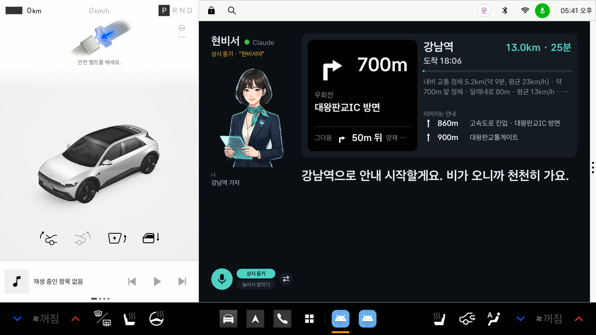
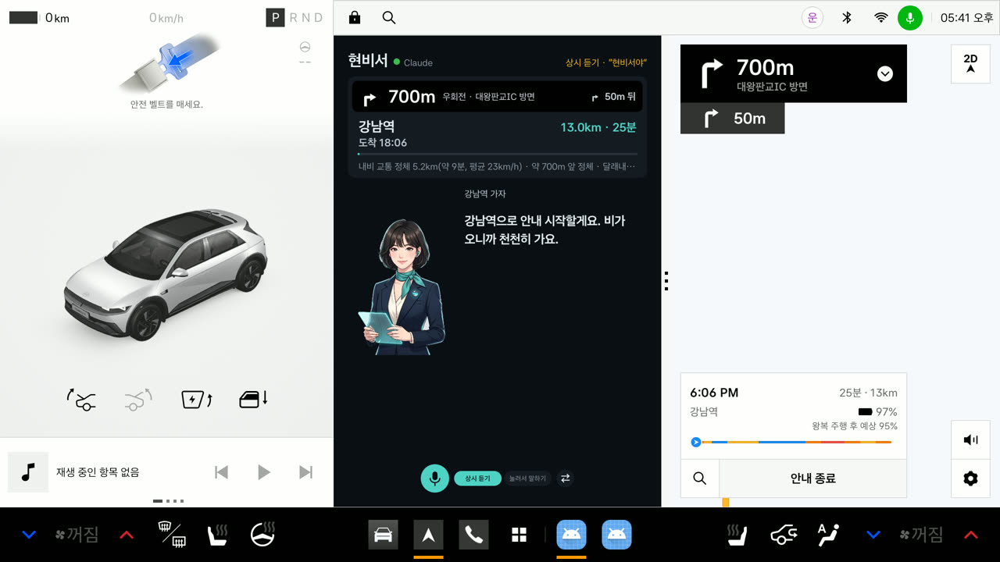
단계
- +0.6s {"do": "say", "text": "강남역 가자", "voice": true} — 음성 2.5초 「현비서야 강남역 가자」
- +15.2s {"wait": "log", "pattern": "navi\\|routeStarted", "timeout": 50} — 확인
- +15.2s {"wait": "tts"}
- +16.0s {"wait": "log", "pattern": "navi\\|tbt\\|[1-9]", "timeout": 15} — 확인
- +18.0s {"wait": "sec", "sec": 2}
- +20.4s {"shot": "1칸 — 현비서가 앞에 남고 오른쪽에 내비 판(회전 · 남은 거리)"} — 1칸 — 현비서가 앞에 남고 오른쪽에 내비 판(회전 · 남은 거리)
- +23.2s {"do": "split", "on": true} — 2칸(내비와 나란히)
- +27.2s {"wait": "sec", "sec": 4}
- +28.9s {"shot": "반반 — 왼쪽 현비서(길 카드 맨 위 회전 줄) · 오른쪽 내비"} — 반반 — 왼쪽 현비서(길 카드 맨 위 회전 줄) · 오른쪽 내비
통과 e02 · 교통상황 — '앞길 어때?' · 내비 기준 교통 표 영상 1:41
내비가 준 내 경로 교통(정체 구간·도로명·속도)을 말로 답하고, 정차 화면에 서버가 내비 값으로 만든 표를 띄운다(반반 화면 그대로)
판정
- ✓ 내비 기준으로 교통을 말함
log: say\|P1\|.*(내비|정체|막히|교통) - ✓ 교통 표 카드
log: card\|앞길 교통
실제 대화·동작
| 1:49 | 귀 | 받아 적음 「현비서야 앞길 어때?」 · 595ms |
| 1:49 | 운전자 | 앞길 어때? |
| 1:52 | 현비서 P1 | 생각해 볼게요. |
| 1:54 | 두뇌 | 답 도착 · claude · 카드 「앞길 교통 · 강남역까지 25분(도착 18:07)」 |
| 1:54 | 카드 | 앞길 교통 · 강남역까지 25분(도착 18:07)|6|kind=list|img=0|약 700m 앞 정체 — 달래내로 80m · 평균 13km/h · 약 1분 / 약 700m 앞 서행 — 경부고속도로 대왕판교IC 100m · 평균 40km/h · 약 1분 / 약 7.8km 앞 서행 — 경부고속도로 400m · 평균 65km/h · 약 1분 |
| 1:54 | 현비서 P1 | 내비 교통정보 기준, 700m 앞 달래내로가 정체예요. 양재에서 서초IC 구간도 2.6km 막혀요. 전체 25분이에요. |
화면
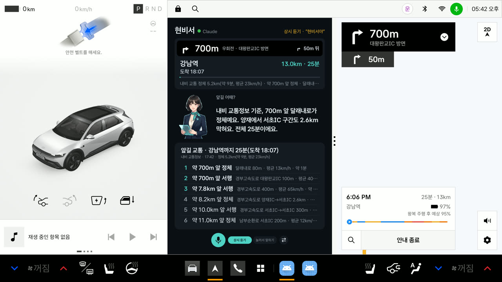
단계
- +0.7s {"do": "say", "text": "앞길 어때?", "voice": true} — 음성 2.3초 「현비서야 앞길 어때?」
- +16.4s {"wait": "reply", "timeout": 50} — 답 도착
- +18.4s {"wait": "sec", "sec": 2}
- +20.0s {"shot": "교통 표(반반)"} — 교통 표(반반)
통과 e03 · 휴게소 소개 — 왼쪽 사진 · 오른쪽 표 영상 2:09
고속도로 길(대전역)을 잡고 '다음 휴게소 소개해 줘' → 검색으로 확인한 휴게소 정보 + 취향 맞춤 추천을 소개 카드(사진 · 표)로
판정
- ✓ 고속도로 목적지 설정
log: nav\|대전 - ✓ 휴게소 소개 카드(info)
log: card\|.*휴게소.*kind=info - ✓ 카드에 사진
log: card\|.*kind=info\|img=1 - ✓ 검색 모드로 확인
server: claude\+search
실제 대화·동작
| 2:20 | 귀 | 받아 적음 「현비서야 대전역 가자.」 · 600ms |
| 2:20 | 운전자 | 대전역 가자. |
| 2:24 | 현비서 P1 | 어디 보자. |
| 2:26 | 두뇌 | 답 도착 · claude |
| 2:26 | 길 | nav 대전역|36.3325,127.4343|est=161012m |
| 2:26 | 현비서 P1 | 대전역으로 목적지를 바꿔서 안내 시작할게요. 비 오니까 천천히 가요. |
| 2:26 | 내비 | cancelled |
| 2:35 | 내비 | routeStarted RouteStartInfo(duration=6780, distance=142000, tollFare=5740, name=대전역, remainDestinationChargingValue=57339) |
| 2:42 | 귀 | 받아 적음 「현비서야 다음 휴게소 소개해줘.」 · 739ms |
| 2:42 | 운전자 | 다음 휴게소 소개해줘. |
| 2:45 | 현비서 P1 | 음, 잠깐만요. |
| 2:55 | 현비서 P1 | 조금만 더 찾아볼게요. |
| 3:06 | 두뇌 | 답 도착 · claude+search · 카드 「기흥휴게소 부산방향 (추정)」 |
| 3:06 | 카드 | 기흥휴게소 부산방향 (추정)|4|kind=info|img=1|위치 — 경부고속도로 부산방향 · 용인 기흥 (판교 다음, 추정) / 대표 메뉴 — 향천우동 / 취향 추천 — 아직 취향을 몰라요, 좋아하는 음식 알려 주세요 |
| 3:06 | 현비서 P1 | 아마 기흥휴게소(부산방향)예요. 대표 메뉴는 향천우동이고요. 지금은 판교 쪽이 막히니 정차하면 화면에서 보세요. |
화면
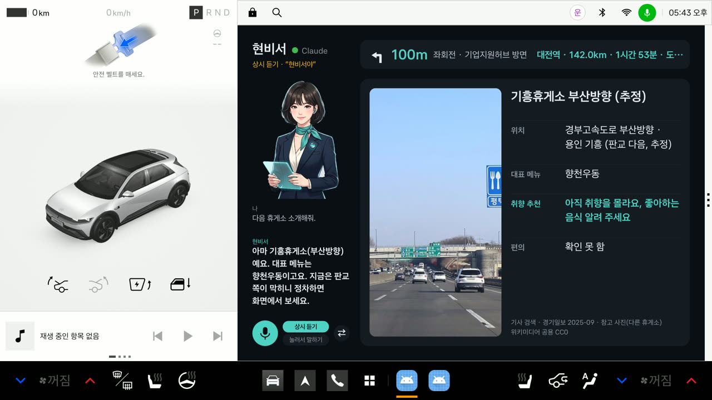
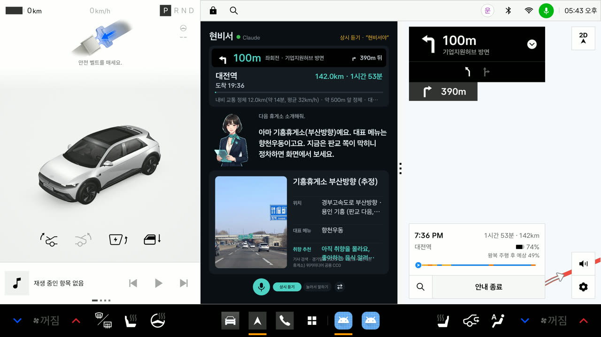
단계
- +2.8s {"do": "split", "on": false} — 1칸
- +3.5s {"do": "say", "text": "대전역 가자", "voice": true} — 음성 2.4초 「현비서야 대전역 가자」
- +18.8s {"wait": "log", "pattern": "navi\\|routeStarted", "timeout": 50} — 확인
- +18.8s {"wait": "tts"}
- +23.8s {"wait": "sec", "sec": 5}
- +24.5s {"do": "say", "text": "다음 휴게소 소개해 줘", "voice": true, "slide": "길이 잡히면"} — 음성 3.1초 「현비서야 다음 휴게소 소개해 줘」
- +58.2s {"wait": "reply", "timeout": 75} — 답 도착
- +62.2s {"wait": "sec", "sec": 4}
- +64.2s {"shot": "휴게소 소개 카드(전체 화면)"} — 휴게소 소개 카드(전체 화면)
- +67.1s {"do": "split", "on": true} — 2칸(내비와 나란히)
- +70.1s {"wait": "sec", "sec": 3}
- +71.9s {"shot": "휴게소 소개 카드(반반)"} — 휴게소 소개 카드(반반)
통과 e04 · 취향 질문 — 묻고 · 대답을 취향으로 기록 영상 3:30
아직 모르는 취향 칸을 한 번 묻고(asked_slot), 운전자 대답을 그 칸에 누적한다
판정
- ✓ 취향 질문을 했다(칸 기록)
server: "asked_slot": "[a-z]+" - ✓ 대답을 취향으로 기록(아이유)
server: "taste": \[[^\]]*아이유
실제 대화·동작
| 3:38 | 귀 | 받아 적음 「현비서야 심심한데 나에 대해 하나만 물어봐줘.」 · 767ms |
| 3:38 | 운전자 | 심심한데 나에 대해 하나만 물어봐줘. |
| 3:42 | 현비서 P1 | 생각해 볼게요. |
| 3:44 | 두뇌 | 답 도착 · claude |
| 3:44 | 현비서 P1 | 좋아요, 하나만 물어볼게요. 좋아하는 음식이나 자주 드시는 메뉴가 뭐예요? |
| 3:51 | 운전자 | 운전할 땐 아이유 노래 자주 들어. |
| 3:54 | 현비서 P1 | 어디 보자. |
| 3:56 | 두뇌 | 답 도착 · claude |
| 3:56 | 현비서 P1 | 아이유 노래 좋아하시는군요, 기억해 둘게요. 비 오는 길엔 잔잔한 노래가 딱이죠. |
화면
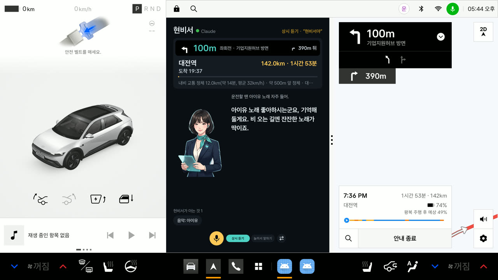
단계
- +0.7s {"do": "say", "text": "심심한데 나에 대해 하나만 물어봐 줘", "voice": true} — 음성 4.3초 「현비서야 심심한데 나에 대해 하나만 물어봐 줘」
- +12.8s {"wait": "reply", "timeout": 50} — 답 도착
- +13.5s {"do": "say", "text": "운전할 땐 아이유 노래 자주 들어", "voice": false, "slide": "현비서가 물으면"} — 음성 3.8초 「현비서야 운전할 땐 아이유 노래 자주 들어」
- +25.5s {"wait": "reply", "timeout": 50} — 답 도착
- +27.1s {"shot": "취향 기록 뒤"} — 취향 기록 뒤
통과 e05 · 웹툰 순위 — 표지 격자 영상 4:05
정보 통로(네이버 웹툰)의 순위를 앞 3개만 말하고, 10개를 표지 그림 격자로
판정
- ✓ 웹툰 카드에 표지 그림
log: card\|.*웹툰.*img=([1-9]|10) - ✓ 순위를 말함
log: say\|P1\|.*
실제 대화·동작
| 4:13 | 귀 | 받아 적음 「현비서야 웹툰 순위 알려줘.」 · 651ms |
| 4:13 | 운전자 | 웹툰 순위 알려줘. |
| 4:17 | 현비서 P1 | 음, 잠깐만요. |
| 4:20 | 두뇌 | 답 도착 · claude · 카드 「웹툰 인기 TOP 10 · 일요 웹툰」 |
| 4:20 | 카드 | 웹툰 인기 TOP 10 · 일요 웹툰|10|kind=image_list|img=10|별이삼샵 — 혀노 / 육아일기 — 자까 / 범죄도시0 — 박태준 / 정종택 |
| 4:20 | 현비서 P1 | 네이버 웹툰 일요 인기순이에요. 1위 별이삼샵, 2위 육아일기, 3위 범죄도시0이에요. 나머지는 정차하면 화면에서 보세요. |
화면
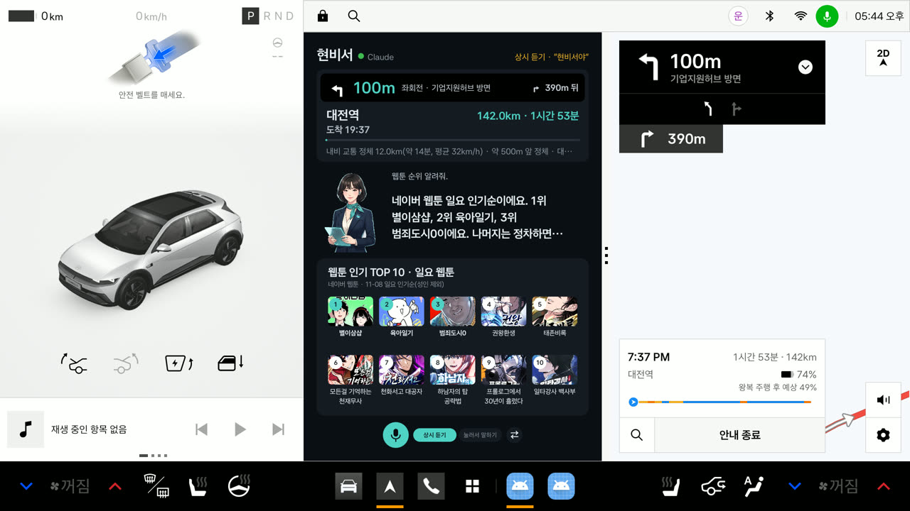
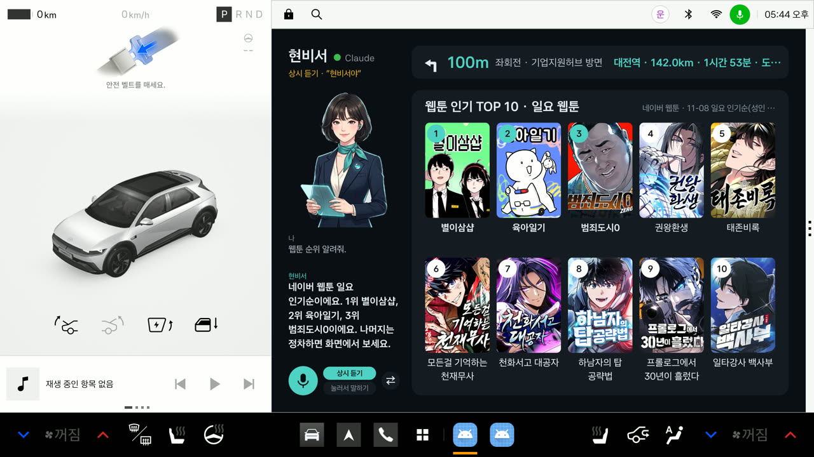
단계
- +0.7s {"do": "say", "text": "웹툰 순위 알려줘", "voice": true} — 음성 2.9초 「현비서야 웹툰 순위 알려줘」
- +17.9s {"wait": "reply", "timeout": 50} — 답 도착
- +22.9s {"wait": "sec", "sec": 5}
- +24.5s {"shot": "웹툰 표지 격자(반반)"} — 웹툰 표지 격자(반반)
- +27.3s {"do": "split", "on": false} — 1칸
- +30.3s {"wait": "sec", "sec": 3}
- +32.5s {"shot": "웹툰 표지 격자(전체)"} — 웹툰 표지 격자(전체)
통과 e06 · 영화 순위 — 목록 표 영상 4:46
영화진흥위원회 박스오피스(어제 기준)를 앞 3개 말하고 10개 목록 표
판정
- ✓ 영화 순위 목록 카드
log: card\|.*(영화|박스).*kind=list - ✓ 출처·기준을 붙여 말함
log: say\|P1\|.*(영화진흥|기준|1위)
실제 대화·동작
| 4:54 | 귀 | 받아 적음 「현비서야 요즘 영화 순위 알려줘.」 · 617ms |
| 4:54 | 운전자 | 요즘 영화 순위 알려줘. |
| 4:57 | 현비서 P1 | 생각해 볼게요. |
| 5:00 | 두뇌 | 답 도착 · claude · 카드 「영화 박스오피스 TOP 10」 |
| 5:00 | 카드 | 영화 박스오피스 TOP 10|10|kind=list|img=0|극장판 치이카와: 인어 섬의 비밀 — 67,621명 / 최종면접 — 44,616명 / 하트 오브 비스트 — 38,110명 |
| 5:00 | 현비서 P1 | 영화진흥위원회 어제 기준이에요. 1위 극장판 치이카와, 2위 최종면접, 3위 하트 오브 비스트예요. 나머지는 정차하면 화면에서 보세요. |
화면
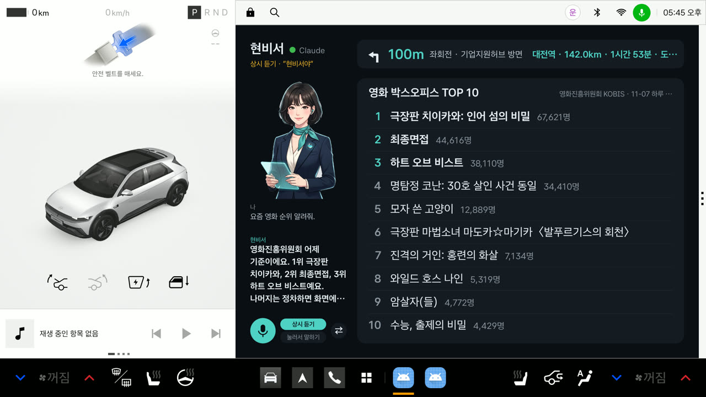
단계
- +0.6s {"do": "say", "text": "요즘 영화 순위 알려줘", "voice": true} — 음성 3.2초 「현비서야 요즘 영화 순위 알려줘」
- +17.5s {"wait": "reply", "timeout": 50} — 답 도착
- +19.5s {"wait": "sec", "sec": 2}
- +21.2s {"shot": "영화 순위 표"} — 영화 순위 표
통과 e07 · 스포츠 기사 — 웹 검색 모드 영상 5:15
통로에 없는 최신 스포츠 소식은 내 Claude 계정 두뇌가 웹 검색으로 찾아 날짜·결과·매체와 함께
판정
- ✓ 검색 모드로 답함
server: claude\+search - ✓ 소식을 말함
log: say\|P1\|.{20,}
실제 대화·동작
| 5:23 | 귀 | 받아 적음 「현비서야 요즘 야구 소식 알려줘.」 · 601ms |
| 5:23 | 운전자 | 요즘 야구 소식 알려줘. |
| 5:27 | 현비서 P1 | 어디 보자. |
| 5:36 | 현비서 P1 | 조금만 더 찾아볼게요. |
| 5:57 | 두뇌 | 답 도착 · claude+search · 카드 「2026 한국시리즈 결과」 |
| 5:57 | 카드 | 2026 한국시리즈 결과|5|kind=list|img=0|최종 — 삼성 4승 1패 우승 / 5차전 11-08 · 삼성 12:1 KT (대구) / 1차전 — KT 승 (수원) |
| 5:57 | 현비서 P1 | 오늘 삼성이 KT를 12대 1로 꺾고 한국시리즈 4승 1패로 우승했대요. 12년 만이고, MVP는 부상 투혼의 구자욱 선수예요. |
화면
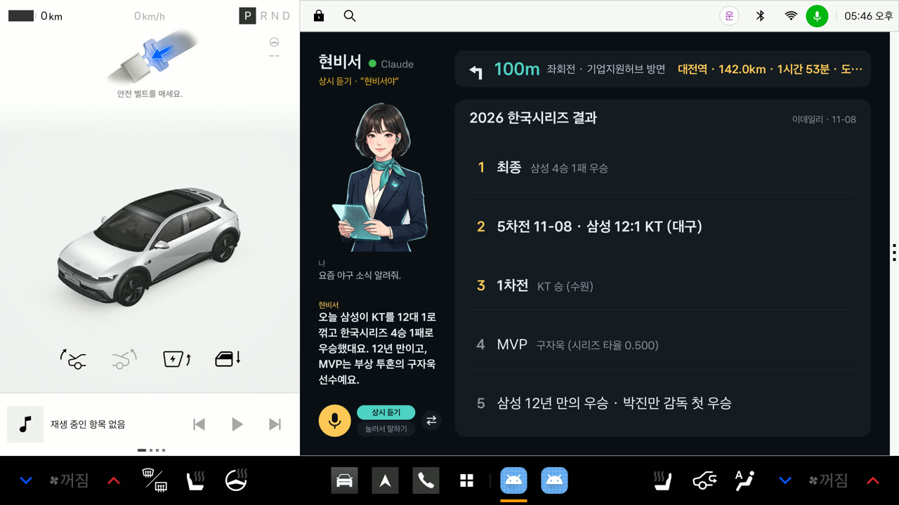
단계
- +0.7s {"do": "say", "text": "요즘 야구 소식 알려줘", "voice": true} — 음성 3.2초 「현비서야 요즘 야구 소식 알려줘」
- +44.8s {"wait": "reply", "timeout": 75} — 답 도착
- +46.8s {"wait": "sec", "sec": 2}
- +48.5s {"shot": "야구 소식"} — 야구 소식
통과 e08 · 인물 기사 — 사진 · 기사 표 영상 6:12
인물 근황은 검색해서 소개 카드(왼쪽 인물 사진 — 위키미디어 공용 · 오른쪽 날짜 · 매체 — 기사 요지)
판정
- ✓ 검색 모드로 답함
server: claude\+search - ✓ 인물 사진 소개 카드
log: card\|.*kind=info\|img=1
실제 대화·동작
| 6:20 | 귀 | 받아 적음 「현비서야 손흥민 최근 기사 알려줘.」 · 676ms |
| 6:20 | 운전자 | 손흥민 최근 기사 알려줘. |
| 6:24 | 현비서 P1 | 음, 잠깐만요. |
| 6:33 | 현비서 P1 | 조금만 더 찾아볼게요. |
| 6:47 | 두뇌 | 답 도착 · claude+search · 카드 「손흥민 최근 소식 (LAFC)」 |
| 6:47 | 카드 | 손흥민 최근 소식 (LAFC)|5|kind=info|img=1|11-08 · 미디어파인 — 시애틀 원정 1-2 패, 손흥민 풀타임(공격포인트 없음) / 정규리그 — 12승 11무 11패 승점 47, 서부 6위로 마감 / 시즌 기록 — MLS 7골 15도움 |
| 6:47 | 현비서 P1 | 손흥민 선수는 오늘 시애틀 원정에서 풀타임을 뛰었는데 LAFC가 1대2로 졌대요. 그래도 서부 6위로 플레이오프에는 가요. 정차하면 화면에서 보세요. |
화면
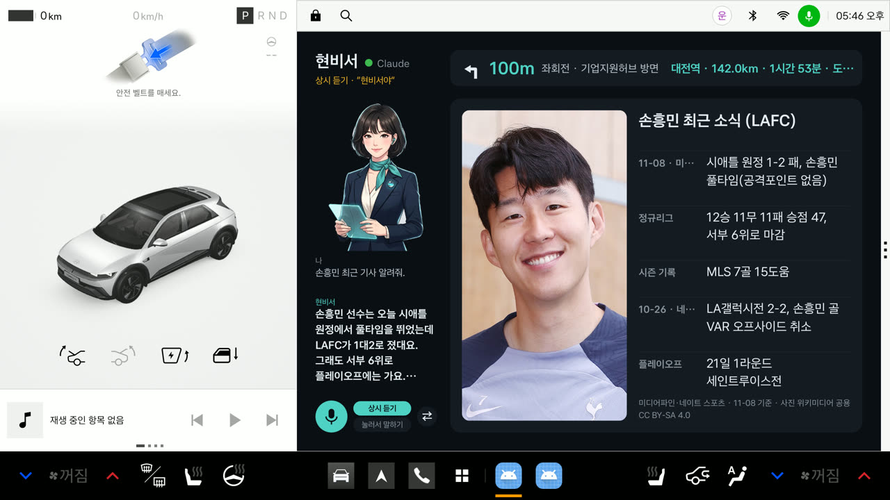
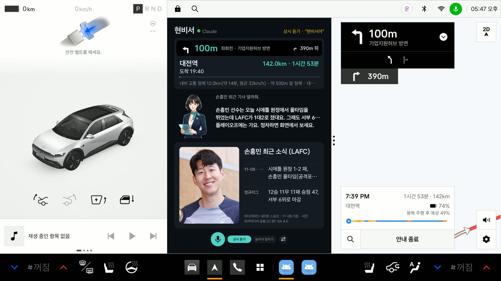
단계
- +0.7s {"do": "say", "text": "손흥민 최근 기사 알려줘", "voice": true} — 음성 3.4초 「현비서야 손흥민 최근 기사 알려줘」
- +40.0s {"wait": "reply", "timeout": 75} — 답 도착
- +44.0s {"wait": "sec", "sec": 4}
- +46.3s {"shot": "인물 기사 카드(전체)"} — 인물 기사 카드(전체)
- +49.1s {"do": "split", "on": true} — 2칸(내비와 나란히)
- +52.1s {"wait": "sec", "sec": 3}
- +53.9s {"shot": "인물 기사 카드(반반)"} — 인물 기사 카드(반반)
통과 e09 · 주행 중 — 사고 정찰 · 휴게소 알림 영상 7:14
D·60km/h로 달리며 300m 앞 사고(갈림길 없음 → 우회 묻지 않음, 앱 P0 먼저)와 3km 앞 휴게소 알림(말만 — 주행 중 카드 숨김)
판정
- ✓ 앱이 먼저 사고 경고(P0)
log: say\|P0\|.*사고 - ✓ 우회 타이밍 판정
log: scout\|demo\|사고\|sev=3\|ahead=300\|detour=(none|possible|unknown) - ✓ 휴게소 알림 이벤트
log: event\|restarea - ✓ 휴게소를 말로 소개(주행 중 — 카드는 숨김)
log: say\|P\d\|.*휴게소
실제 대화·동작
| 7:21 | 길 | nav 대전역|36.33219909667969,127.4343032836914|est=161054m |
| 7:21 | 내비 | cancelled |
| 7:32 | 내비 | routeStarted RouteStartInfo(duration=6960, distance=143000, tollFare=5740, name=대전역, remainDestinationChargingValue=57227) |
| 7:38 | 이벤트 | depart |
| 7:39 | 정찰 | 사고|sev=3|ahead=300|detour=possible@34|사고 · 약 300m · 경부고속도로 1차로 추돌 사고 |
| 7:39 | 현비서 P0 | 300미터 앞 사고 정보예요. 속도 줄이고 조심하세요. |
| 7:43 | 두뇌 | 답 도착 · claude |
| 7:50 | 두뇌 | 답 도착 · claude |
| 7:52 | 휴게소 | 기흥휴게소|2800m |
| 7:52 | 이벤트 | restarea|{"restName":"기흥휴게소","aheadM":2800} |
| 7:59 | 두뇌 | 답 도착 · claude+search |
| 8:05 | 현비서 P1 | 대전역까지 2시간쯤 걸려요. 내비 기준 초반 판교 쪽이 막혀서 14분 정도 더 걸려요. |
| 8:35 | 현비서 P1 | 300m 앞 경부고속도로 1차로에 추돌 사고가 있어요. 곧 갈림길에서 돌아갈 수 있는데, 우회할까요? |
| 8:54 | 현비서 P2 | 다음 휴게소는 기흥휴게소예요. 들러서 쉬었다 갈까요? |
화면
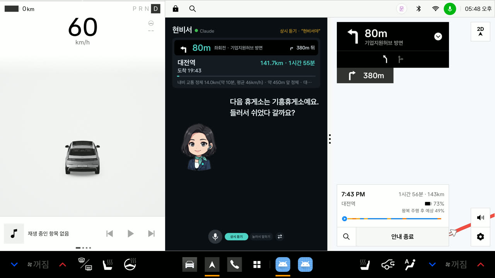
단계
- +0.1s {"do": "intent", "extras": "--es dest 대전역 --ef lat 36.3322 --ef lng 127.4343"} — --es dest 대전역 --ef lat 36.3322 --ef lng 127.4343
- +12.2s {"wait": "log", "pattern": "navi\\|routeStarted", "timeout": 40} — 확인
- +13.5s {"do": "vc", "args": ["gear", "Drive"]} — gear Drive
- +14.6s {"do": "vc", "args": ["speed", "60"]} — speed 60
- +18.6s {"wait": "sec", "sec": 4}
- +18.8s {"do": "intent", "extras": "--es traffic 'accident|300|경부고속도로 1차로 추돌 사고'"} — --es traffic 'accident|300|경부고속도로 1차로 추돌 사고'
- +31.3s {"wait": "reply", "timeout": 45} — 답 도착
- +31.4s {"do": "intent", "extras": "--es restarea '기흥휴게소|2800'"} — --es restarea '기흥휴게소|2800'
- +93.6s {"wait": "log", "pattern": "say\\|P\\d\\|.*휴게소", "timeout": 100} — 확인
- +93.6s {"wait": "tts"}
- +95.2s {"shot": "주행 중 화면"} — 주행 중 화면
- +96.6s {"do": "vc", "args": ["speed", "0"]} — speed 0
- +98.0s {"do": "vc", "args": ["gear", "Park"]} — gear Park
통과 e10 · 글레오 — '현비서 지금 상황' 흉내 영상 9:00
Gleo Interface 액션(HYUN_STATUS)에 7초 안에 영어 상황 문장으로 응답
판정
- ✓ 목적지·남은 시간 영어 응답
log: gleo\|response\|.*Heading to
실제 대화·동작
| 9:07 | 글레오 | action|HYUN_STATUS|{"item":"all"} |
| 9:07 | 글레오 | response|{"functionName":"HYUN_STATUS","status":"success","message":"Heading to 대전역: 141.6 km and about 115 minutes left, arriving at 19:43. The navigation reports 14.0km of congestion, about 10 minutes of delay on the route. The nearest is heavy congestion in 13.7km.","mode":"voice"} |
화면
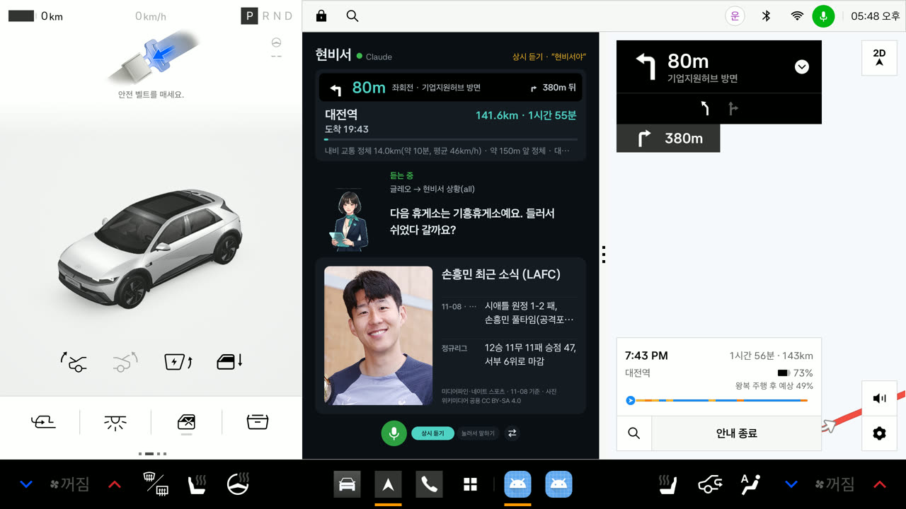
단계
- +0.1s {"do": "gleo", "action": "HYUN_STATUS", "param": {"item": "all"}} — HYUN_STATUS {'item': 'all'}
- +0.5s {"wait": "log", "pattern": "gleo\\|response", "timeout": 10} — 확인
- +2.5s {"wait": "sec", "sec": 2}
- +4.4s {"shot": "글레오 응답"} — 글레오 응답
통과 e17 · 도착 추천 — 점심 시간 곧 도착 · 국밥 취향 · 내려서 카드 영상 9:12
도착 시각 · 목적지 · 취향을 합쳐 묻기 전에 먼저: 곧 도착에 한마디 + 한 줄, 내리면 목적지 근처 식당 카드(카카오 로컬 실시간 · 서버가 만듦)
판정
- ✓ 카카오 실시간 검색(로그엔 검색어·개수만)
server: "places": "kakao\|near - ✓ 곧 도착 한 줄
log: arrive\|line\|.*점심 - ✓ 곧 도착 한마디
log: say\|P\d\|.*(점심|국밥) - ✓ 도착 카드 3~5곳
log: card\|.*근처.*\|[3-5]\|
실제 대화·동작
| 9:19 | 길 | nav cancel|demo|대전역 |
| 9:24 | 귀 | 받아 적음 「현비서야 나 국밥 좋아해.」 · 656ms |
| 9:24 | 운전자 | 나 국밥 좋아해. |
| 9:27 | 현비서 P1 | 생각해 볼게요. |
| 9:29 | 두뇌 | 답 도착 · claude |
| 9:29 | 현비서 P1 | 국밥 좋아하시는군요, 기억해 둘게요. 비도 오고 4도라 뜨끈한 국밥이 딱이겠어요. |
| 9:35 | 길 | nav 강남역|37.49789810180664,127.02760314941406|est=14520m |
| 9:36 | 내비 | cancelled |
| 9:44 | 내비 | routeStarted RouteStartInfo(duration=1440, distance=13000, tollFare=700, name=강남역, remainDestinationChargingValue=75696) |
| 9:49 | 이벤트 | depart |
| 9:54 | 두뇌 | 답 도착 · claude |
| 9:54 | 현비서 P1 | 강남역까지 24분, 12시 14분 도착이에요. 초반 달래내로가 막혀서 8분쯤 더 걸려요. |
| 10:01 | 이벤트 | near |
| 10:07 | 두뇌 | 답 도착 · claude · 카드 「강남역 근처 점심 · 국밥 취향」 |
| 10:07 | 카드 | 강남역 근처 점심 · 국밥 취향|5|kind=list|img=0|콩뿌리 콩나물국밥 — 143m · 국밥 · 걸어서 3분 / 국밥쟁이 강남역점 — 144m · 국밥 · 걸어서 3분 / 보승회관 강남역직영점 — 173m · 국밥 · 걸어서 3분 |
| 10:25 | 현비서 P1 | 곧 도착이에요, 점심시간이네요. 강남역에서 143m 거리 콩뿌리 콩나물국밥 어때요? 바로 거기로 갈까요? 다른 곳은 내리면 보여 드릴게요. |
| 10:38 | 운전자 | 아니 내려서 볼게 |
| 10:41 | 현비서 P1 | 생각해 볼게요. |
| 10:43 | 두뇌 | 답 도착 · claude |
| 10:43 | 현비서 P1 | 네, 알겠어요. 내리시면 다른 곳도 화면에 보여 드릴게요. |
| 10:50 | 이벤트 | arrived |
| 10:55 | 두뇌 | 답 도착 · claude · 카드 「강남역 근처 점심 · 국밥 취향」 |
| 10:55 | 카드 | 강남역 근처 점심 · 국밥 취향|5|kind=list|img=0|콩뿌리 콩나물국밥 — 143m · 국밥 · 걸어서 3분 / 국밥쟁이 강남역점 — 144m · 국밥 · 걸어서 3분 / 보승회관 강남역직영점 — 173m · 국밥 · 걸어서 3분 |
| 10:55 | 현비서 P1 | 강남역 도착했어요. 콩뿌리 콩나물국밥까지 걸어서 3분이에요. 화면에 다섯 곳 띄웠어요. |
화면
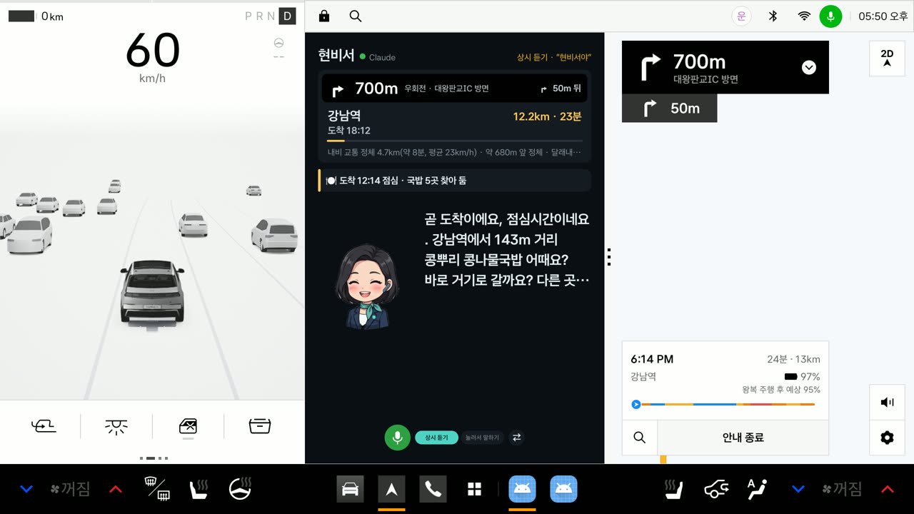
단계
- +0.1s {"do": "intent", "extras": "--ez cancel true"} — --ez cancel true
- +3.1s {"wait": "sec", "sec": 3}
- +3.8s {"do": "say", "text": "나 국밥 좋아해", "voice": false, "slide": "출발 전에 취향을 말해 둬요"} — 음성 2.7초 「현비서야 나 국밥 좋아해」
- +15.9s {"wait": "reply", "timeout": 40} — 답 도착
- +16.0s {"do": "intent", "extras": "--es clock 11:50"} — --es clock 11:50
- +16.1s {"do": "intent", "extras": "--es dest 강남역 --ef lat 37.4979 --ef lng 127.0276"} — --es dest 강남역 --ef lat 37.4979 --ef lng 127.0276
- +24.5s {"wait": "log", "pattern": "navi\\|routeStarted", "timeout": 40} — 확인
- +25.7s {"do": "vc", "args": ["gear", "Drive"]} — gear Drive
- +26.8s {"do": "vc", "args": ["speed", "60"]} — speed 60
- +29.6s {"wait": "log", "pattern": "event\\|depart", "timeout": 20, "from": "last"} — 확인
- +41.6s {"wait": "sec", "sec": 12}
- +41.8s {"do": "intent", "extras": "--es event near"} — --es event near
- +47.4s {"wait": "log", "pattern": "arrive\\|line\\|", "timeout": 60} — 확인
- +65.4s {"wait": "log", "pattern": "say\\|P\\d\\|.*갈까요", "timeout": 60, "from": "last"} — 확인
- +75.5s {"wait": "tts"}
- +77.1s {"shot": "주행 — 곧 도착 한마디 · 내비 판 아래 한 줄(점심 · 국밥)"} — 주행 — 곧 도착 한마디 · 내비 판 아래 한 줄(점심 · 국밥)
- +77.7s {"do": "say", "text": "아니 내려서 볼게", "voice": false, "slide": "곧 도착 — '바로 거기로 갈까요?'에"} — 음성 2.8초 「현비서야 아니 내려서 볼게」
- +88.2s {"wait": "reply", "timeout": 40} — 답 도착
- +89.3s {"do": "vc", "args": ["speed", "0"]} — speed 0
- +90.7s {"do": "vc", "args": ["gear", "Park"]} — gear Park
- +90.9s {"do": "intent", "extras": "--es event arrived"} — --es event arrived
- +90.9s {"wait": "log", "pattern": "card\\|.*근처", "timeout": 60} — 확인
- +102.9s {"wait": "tts"}
- +104.6s {"shot": "정차 — 도착 추천 카드(목적지 근처 국밥 5곳)"} — 정차 — 도착 추천 카드(목적지 근처 국밥 5곳)
- +104.7s {"do": "intent", "extras": "--es clock off"} — --es clock off
통과 e18 · 도착 추천 — 곧 도착 제안에 '응' → 그 식당으로 안내 영상 11:06
주행 중 고르기는 말 한마디로 — 두뇌가 [주변 장소] 1번 좌표를 nav로, 앱이 내비 목적지를 바꾼다(현비서 화면 지키기 포함)
판정
- ✓ 곧 도착에 1번 식당 제안(듣기)
log: say\|P\d\|.*갈까요 - ✓ 두뇌가 고른 식당을 nav로
server: "nav": \{"name": " - ✓ 고른 식당으로 경로
log: nav\|(?!코엑스)
실제 대화·동작
| 11:12 | 길 | nav 코엑스|37.511600494384766,127.05950164794922|est=14852m |
| 11:13 | 내비 | cancelled |
| 11:22 | 내비 | routeStarted RouteStartInfo(duration=1740, distance=14000, tollFare=0, name=코엑스, remainDestinationChargingValue=75491) |
| 11:27 | 이벤트 | depart |
| 11:32 | 두뇌 | 답 도착 · claude |
| 11:39 | 이벤트 | near |
| 11:41 | 현비서 P1 | 코엑스까지 29분, 12시 50분 도착이에요. 초반 달래내로 680m 앞이 막혀서 8분쯤 더 걸려요. |
| 11:46 | 두뇌 | 답 도착 · claude · 카드 「코엑스 근처 점심 · 국밥 취향」 |
| 11:46 | 카드 | 코엑스 근처 점심 · 국밥 취향|5|kind=list|img=0|아오내순대 코엑스몰점 — 156m · 국밥 · 걸어서 3분 / 이맛콩나물국밥 삼성동1점 — 239m · 국밥 · 걸어서 4분 / 일품돼지국밥 삼성역직영본점 — 311m · 국밥 · 걸어서 5분 |
| 12:12 | 현비서 P1 | 곧 도착이에요, 점심시간이네요. 코엑스에서 156m, 아오내순대 코엑스몰점 국밥 어때요? 바로 거기로 갈까요? |
| 12:13 | 귀 | 받아 적음 「현비서야 응 거기로 가자.」 · 512ms |
| 12:13 | 운전자 | 응 거기로 가자. |
| 12:16 | 현비서 P1 | 어디 보자. |
| 12:18 | 두뇌 | 답 도착 · claude |
| 12:18 | 길 | nav 아오내순대 코엑스몰점|37.5106,127.0583|est=14751m |
| 12:18 | 현비서 P1 | 아오내순대 코엑스몰점으로 안내할게요. 목적지에서 156m예요. |
| 12:19 | 내비 | cancelled |
| 12:21 | 이벤트 | depart |
| 12:26 | 두뇌 | 답 도착 · claude |
| 12:27 | 내비 | routeStarted RouteStartInfo(duration=1740, distance=14000, tollFare=0, name=아오내순대 코엑스몰점, remainDestinationChargingValue=75511) |
| 12:35 | 현비서 P1 | 아오내순대 코엑스몰점까지 30분, 12시 51분 도착이에요. 내비 교통정보로는 아직 확인 전이고, 비 확률이 높아 천천히 가요. |
화면
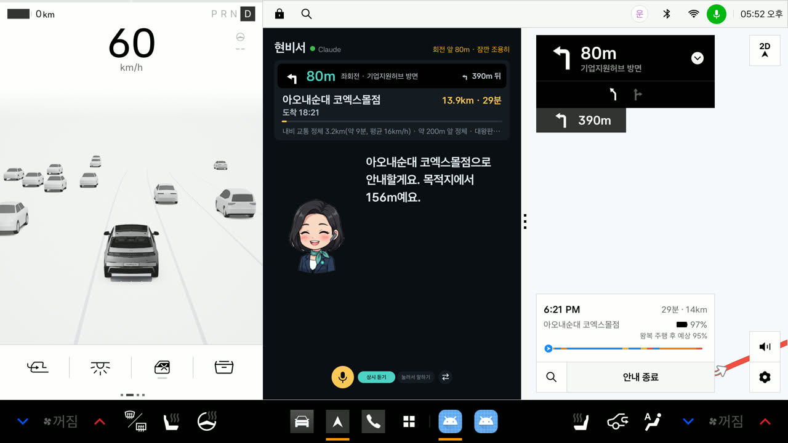
단계
- +0.2s {"do": "intent", "extras": "--es clock 12:20"} — --es clock 12:20
- +0.3s {"do": "intent", "extras": "--es dest 코엑스 --ef lat 37.5116 --ef lng 127.0595"} — --es dest 코엑스 --ef lat 37.5116 --ef lng 127.0595
- +10.0s {"wait": "log", "pattern": "navi\\|routeStarted", "timeout": 40} — 확인
- +11.4s {"do": "vc", "args": ["gear", "Drive"]} — gear Drive
- +12.5s {"do": "vc", "args": ["speed", "60"]} — speed 60
- +15.0s {"wait": "log", "pattern": "event\\|depart", "timeout": 20, "from": "last"} — 확인
- +27.0s {"wait": "sec", "sec": 12}
- +27.1s {"do": "intent", "extras": "--es event near"} — --es event near
- +59.6s {"wait": "log", "pattern": "say\\|P\\d\\|.*갈까요", "timeout": 60} — 확인
- +59.6s {"wait": "tts"}
- +60.3s {"do": "say", "text": "응 거기로 가자", "voice": false, "slide": "곧 도착 — '바로 거기로 갈까요?'에"} — 음성 2.5초 「현비서야 응 거기로 가자」
- +66.4s {"wait": "log", "pattern": "^nav\\|(?!코엑스)", "timeout": 40} — 확인
- +75.6s {"wait": "log", "pattern": "navi\\|routeStarted", "timeout": 40, "from": "last"} — 확인
- +78.6s {"wait": "sec", "sec": 3}
- +80.2s {"shot": "식당으로 안내 — 내비 판 목적지가 바뀜"} — 식당으로 안내 — 내비 판 목적지가 바뀜
- +81.1s {"do": "vc", "args": ["speed", "0"]} — speed 0
- +82.5s {"do": "vc", "args": ["gear", "Park"]} — gear Park
- +82.6s {"do": "intent", "extras": "--es clock off"} — --es clock off